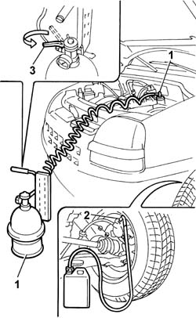
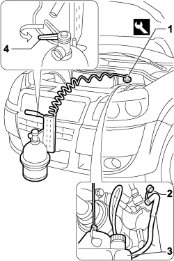

0010T65 hydraulic brake system bleed air
- Path
- Procedures > 00 MAINTENANCE > 0010 NEW VEHICLES AND MAINTENANCE > 0010T VEHICLE FLUIDS > 0010T65 hydraulic brake system bleed air
- Kind
- repair procedure (removal / refitting; the operation number is the code)
- Applies to
- all engines; all production periods
- Interactive page
- https://sloeber94.github.io/elrnDB-fDbl/en/#/2584129
Applies to: engines: 1.2 8v, 1.6 16v, 1.3 JTD 16V, 1.9 JTD 8V, 1.9 DIESEL; all production periods
Position the vehicle on a lift.
Check that the brake/clutch fluid is between the MIN and MAX levels.
1. Remove the brake/clutch fluid reservoir cap and connect the equipment to the reservoir.
Description | Code | |
|---|---|---|
1 | Device | 1.806.097.000 |
Remove the protective cap for the bleed valve on the brake caliper.
2. Connect the recovery device (pipe and reservoir) to the brake caliper bleed valve.
Open the bleed valve.
3. Open the fluid reservoir tap slowly.
Wait for all the air in the hydraulic system to escape.
Open the bleed valve on the brake caliper.
Repeat the above operations for the remaining front brake calliper and the two rear drums.
Remove the vehicle from the lift.

Applies to: engines: 1.4 8v; production: da 12/03; only with equipment: MY 2005
Position the vehicle on a lift.
Check that the brake/clutch fluid is between the MIN and MAX levels.
1. Remove the brake/clutch fluid reservoir cap and connect the equipment to the reservoir.
Description | Code | |
|---|---|---|
1 | Device | 1.806.097.000 |
2. Remove the protective cap for the bleed valve on the brake caliper.
3. Connect the recovery device (pipe and reservoir) to the brake caliper bleed valve.
Open the bleed valve.
4. Open the fluid reservoir tap slowly.
Wait for all the air in the hydraulic system to escape.
Open the bleed valve on the brake caliper.
Repeat the above operations for the remaining front brake calliper and the rear brake cylinders.
Remove the vehicle from the lift.

Topics that link to this page (30)
- 0010T62 BRAKE and/or CLUTCH FLUID - Replace. fluid - Includes. washing pipes and bleeding air
- 0010T63 extras for versions with abs following operation 0010t62
- 0010T66 manual gearbox oil check level and top up if necessary
- 3310A14 FRONT DISC BRAKES - R.R.
- 3310A30 FRONT BRAKE CALIPER (one) - R.R.
- 3330A18 front or rear hydraulic brake system - bleed
- 3330A19 front or rear hydraulic brake system - bleed air for system with abs
- 3330C10 (PUMP) - MASTER CYLINDER R.R.
- 3330C14 (PUMP) - MASTER CYLINDER .R.R for versions with A.B.S.
- 3330C30 brake fluid reservoir - r + r and wash inside
- 3330C37 pipe from brake fluid reservoir to master cylinder (pump) - r r for rhd versions
- 3330C60 LOAD PROPORTIONING VALVE (one), left or right - R.R. - Includes adjustment.
- 3330D02 brake servo/brake pump assembly - r r
- 3330D10 brake servo - r+r - includes separation from master cylinder (pump)
- 3330D14 brake servo - r+r for versions with abs - includes separation from master cylinder (pump)
- 3330E10 FLEXIBLE PIPE (one), left or right, to front brake calipers - R.R .
- 3330E34 Intermediate FLEXIBLE PIPE (one), left or right, to rear brakes - R.R.
- 3330E52 RIGID PIPE from master cylinder to LEFT front brake - R.R.
- 3330E53 RIGID PIPE from master cylinder to RIGHT front brake - R.R.
- 3330E59 RIGID PIPE from load proportioning valve/ to intermediate flexible pipe or connector - R.R.
- 3330E69 RIGID PIPE (one), left or right, to the rear wheel cylinders - R.R.
- 3340A12 A'B.S. system. - electronic and hydraulic CONTROL UNIT R.R.
- 3340B52 pump/central obs pipe - r r
- 3340B55 central brake pipe to lh - r r
- 3340B56 RIGID PIPE from hydraulic CONTROL UNIT to RIGHT FRONT BRAKE - R.R.
- 3340B62 rear connection central pipe - r r
- 3340B70 RIGID PIPE (one), left or right, from connector to intermediate cable - R.R.
- 3340B76 rigid pipe(one), lh or rh, to rear brake cylinder - r r
- 4420D10 rear suspension axle - r+r includes bleeding
- 4420D20 rear suspension axle -replace- includes r+r, check, parts transfer and bleeding